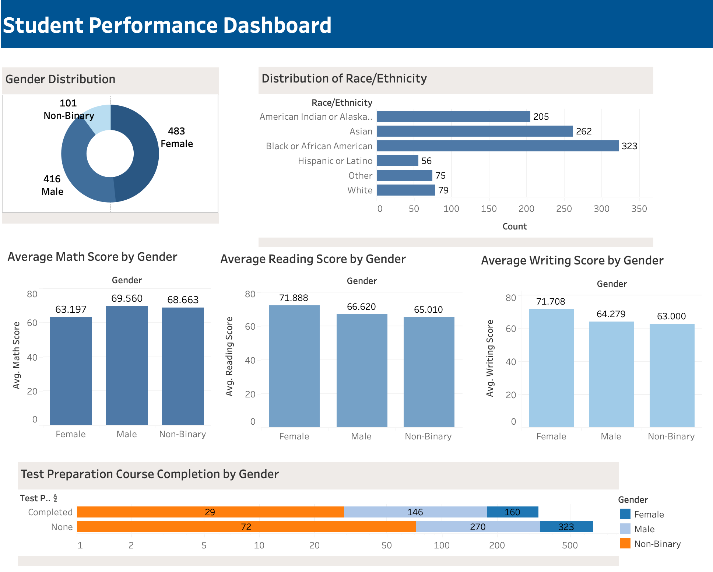

Student Performance Dashboard
Using Tableau, I created a Data Visualization Dashboard to display the trends found in the dataset. The Dashboard displays the correlation between student performance and gender. The data visualization techniques used in the dashboard include a donut pie chart, bar graphs, and stacked bar charts.
Technologies: Tableau
Source Code